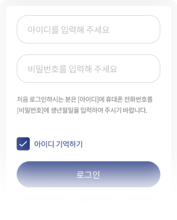
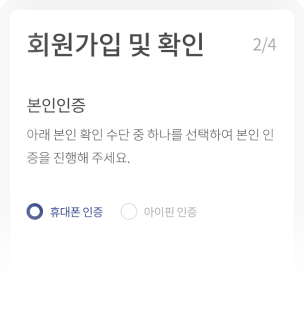
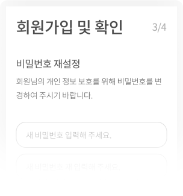
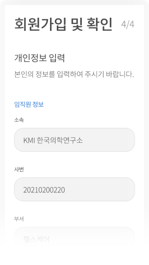
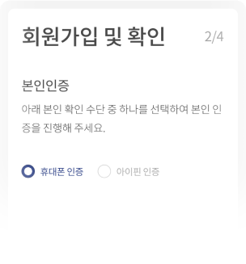
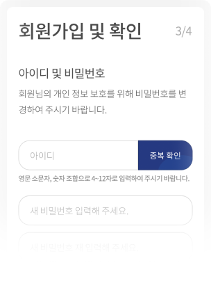
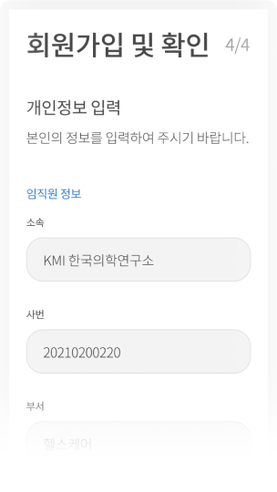

이용 가이드
일반 회원 로그인 하기
아이디/비밀번호 입력
회원 가입 시 등록한 아이디 비밀번호를 입력 시 로그인 버튼이 활성화 됩니다.
활성화 된 버튼을 선택하면 회원님의 아이디로 로그인 되며 KMI 서비스를 원활히 이용 가능합니다.
아이디 저장
아이디 저장 항목 선택 시 체크박스가 활성화 되며 다음에 로그인할 시 아이디가 저장된 상태로 노출됩니다.
사번으로 로그인 하기(최초 로그인)
STEP 1. 사번 / 비밀번호 입력
임직원 분의 사번과 생년월일을 입력 후 로그인 가능합니다.
로그인 버튼을 클릭 하시면 다음 절차로 이동 합니다.
STEP 2. 첫 방문 임직원 로그인
첫 방문 회원이 처음 로그인을 시도할 경우에는 약관동의 절차를 진행 하셔야 합니다.
필수 약관 동의 후 본인 인증하기 버튼을 선택 하면 다음 절차로 이동 합니다.
STEP 3. 본인 인증
선택에서 인증을 원하시는 방법을 선택하시고, 인증받기 버튼을 눌러 인증을 진행해 주세요.
STEP 4. 비밀번호 재설정
새 비밀번호를 입력 후 새 비밀번호 확인을 입력해 주세요.
STEP 5. 개인정보 입력
본인의 개인 정보를 입력 후 KMI 서비스를 이용하실 수 있습니다.
아이디로 로그인하기(최초 로그인)
STEP 1. 아이디 / 비밀번호 입력
아이디에 임직원 분의 휴대폰 번호와 비밀번호에 생년월일을 입력 후 로그인 가능합니다.
로그인 버튼을 클릭 하시면 다음 절차로 이동 합니다.
STEP 2. 첫 방문 임직원 로그인
첫 방문 회원이 처음 로그인을 시도할 경우에는 약관동의 절차를 진행 하셔야 합니다.
필수 약관 동의 후 본인 인증하기 버튼을 선택 하면 다음 절차로 이동 합니다.
STEP 3. 본인 인증
선택에서 인증을 원하시는 방법을 선택하시고, 인증받기 버튼을 눌러 인증을 진행해 주세요.
STEP 4. 아이디 및 비밀번호 재설정
새 비밀번호를 입력 후 새 비밀번호 확인을 입력해 주세요.
STEP 5. 개인정보 입력
본인의 개인 정보를 입력 후 KMI 서비스를 이용하실 수 있습니다.
